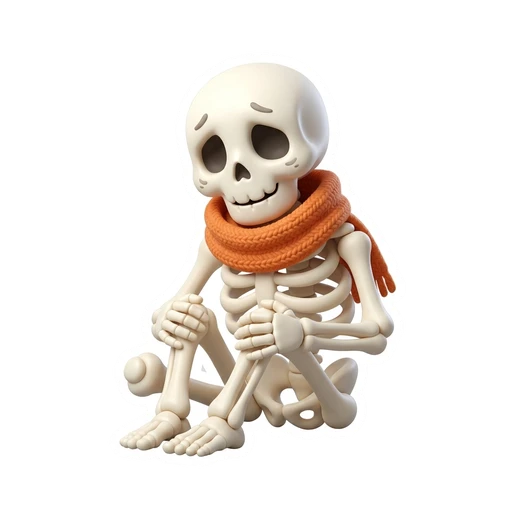

Monster Vet Clinic Report Card
Monster Vet Clinic Report Card
Grade 3 · CEFR A1Grade 4 · CEFR A1+
PPP Team Task (A1): 1. Tick the symptom & cure → 2. Draw your patient → 3. Fill in the 4 boxes & present!
PPP Team Task (A1+): 1. Tick the symptom, cause & cure → 2. Draw the X-Ray → 3. Write the diagnosis (because / should / shouldn't)!
🩺 Vet Team:
🐾 Patient Name:
🌡️ Temp: _____ °C
🩺 1. Head Vet (Speaker)Says the diagnosis
🎨 2. X-Ray ArtistDraws patient & bandage
✏️ 3. Medical WriterWrites in the boxes
⏱️ 4. Clinic ManagerWatches time & Line 5
🔬 Step 2 · Draw your patient, symptom & bandage
💚 ☐ Sick → ☐ Healed!
☑️ Step 1A · Tick 1 Symptom:
☐  tummy ache
☐
tummy ache
☐  cold
☐
cold
☐  sore throat
☐
sore throat
☐  hurt paw
☐ dizzy
☐
hurt paw
☐ dizzy
☐
tummy ache
☐ cold
☐ sore throat
☐ hurt paw
☐ dizzy
☐ 
tired legs☑️ Step 1B · Tick 1 Treatment:
☐  warm water
☐
warm water
☐  honey tea
☐
honey tea
☐  blanket
☐
blanket
☐  bandage
☐
bandage
☐  milk & fruit
☐
milk & fruit
☐  soft bed
soft bed
warm water
☐ honey tea
☐ bandage
☐ milk & fruit
☐ soft bed
✏️ Step 3 · Complete Your Vet Report (Every blank has a helper hint underneath!)
🗣️ Say it together!
1Look at
(pet's name)! It is a
(black cat / bat / ghost).
2What's the matter? It is
(tired / cold / hungry) and it has got
(a tummy ache / a sore throat / a hurt paw).
3Treatment: Give it
(warm water / honey tea) and
(a blanket / a bandage / a bed)!
4All Together: "Now our pet is happy and healthy!"
1Patient: Our patient is
(pet's name), the
(black cat / purple bat / ghost).
2Diagnosis: It has got
(a stomach ache / a sore wing) because it
(ate ten sweets / flew in the rain / shouted).
3Advice (Do): It should
(drink warm honey tea / wear a bandage) and
(rest in bed / stay warm).
4Warning (Don't): It shouldn't
(eat sweets / fly in the wind / shout)! Now it feels better!
1 · 🌡️ Symptoms & Feelings
😴 tired · 🍽️ hungry · 💧 thirsty · 🥶 cold · 💫 dizzy
🤢 a tummy / stomach ache · 😷 a sore throat · 🐾 a sore paw · a hurt wing · 🦴 tired legs
🤢 a tummy / stomach ache · 😷 a sore throat · 🐾 a sore paw · a hurt wing · 🦴 tired legs
2 · 🦠 Patients & Causes
🐈⬛ black cat · 🦇 purple bat · 👻 ghost · 🎃 pumpkin · 💀 skeleton · 🕷️ spider
because it: 🍬 ate ten sweets · 🌧️ flew in the rain · 📣 shouted all night · 💃 danced 5 hours · 🧱 jumped off a wall
because it: 🍬 ate ten sweets · 🌧️ flew in the rain · 📣 shouted all night · 💃 danced 5 hours · 🧱 jumped off a wall
3 · 💊 Cures & Vet Advice
Give it: 💧 warm water · 🍵 honey tea · 🥛 healthy milk · 🍎 fresh fruit · 🧣 a warm blanket · 🩹 a bandage · 🛌 a quiet bed
should: 🍵 drink warm tea · 🛌 rest in bed · 🧣 wear a blanket · 🩹 wear a bandage · 🥛 drink milk
shouldn't: 🚫🍬 eat sweets · 🚫🌧️ fly in the rain · 🚫📣 shout
shouldn't: 🚫🍬 eat sweets · 🚫🌧️ fly in the rain · 🚫📣 shout
1. Jobs chosen2. Symptom & cure ticked3. Patient drawn4. Boxes filled & practised 2x
 PPP Practice & Health Inspector Cards
PPP Practice & Health Inspector Cards Vet Clinic Door Pass (Exit Ticket)
Vet Clinic Door Pass (Exit Ticket) Homework: Home Vet Check-Up
Homework: Home Vet Check-Up